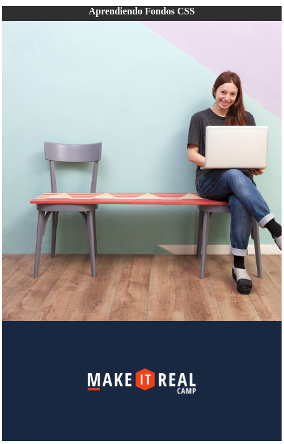

Reto #6: Cambiando el fondo.
Crea una página web que se vea cómo la de la siguiente imagen. Los colores, las imágenes, y el alto y ancho de
los contenedores pueden variar.

Instrucciones
- Se crea una carpeta para el proyecto con las siguientes subacarpetas: css e img
- Crea un archivo html llamado index.html
- Se crean dentro del html tres secciones: un header, un body y un footer.
- En el header se pone una etiqueta h1 con el titulo de color blanco y un mergen inferior de 8px
- En el cuerpo se establece un alto de 1000px con un fondo centrado y que sea una imagen.
- En el footer se establece un alto de 300px con un fondo oscuro y una imagen centrada.